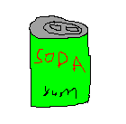
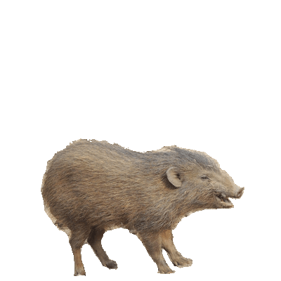

This is a very small C project created using sdl and and emscripten. I have been experimenting with creating web applications and this is the result so far. Source code is example 3 in this repo!
I also think these hog gifs are heckin' cool!

Back to miscellaneous